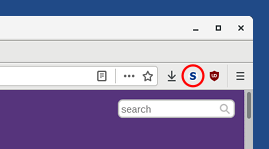
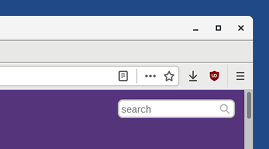
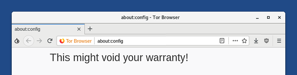
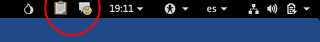
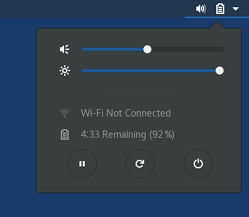

Cette version est une sortie d'urgence pour corriger une faille de sécurité critique dans le Navigateur Tor.
Elle corrige aussi d'autres failles de sécurité. Vous devriez mettre à jour dès que possible.
Changements
Corrige l'activation de NoScript dans le Navigateur Tor
Depuis le vendredi 3 mai 2019, un problème avec Firefox et le Navigateur Tor désactive toutes les extensions. Cette version réactive toutes les extensions dans le Navigateur Tor, notamment NoScript qui est utilisée pour :
Renforcer le Navigateur Tor contre certaines attaques JavaScript qui peuvent conduire à compromettre les comptes et accès de certains sites web.
Activer ou désactiver JavaScript sur certains sites web en utilisant l'interface NoScript, si vous l'utilisez.
Ce problème affecte toujours le Navigateur Tor lorsqu'il est redémarré.
Évitez de redémarrer le Navigateur Tor.
Redémarrez Tails à la place ou suivez les instructions pour réactiver NoScript sans redémarrer Tails. Voir ci-dessous.
Réactiver NoScript sans redémarrer Tails
Si NoScript est activé, l'icône NoScript apparaît dans le coin en haut à droite et le Navigateur Tor est sûr :

Si NoScript est désactivé, l'icône NoScript est absente du coin en haut à droite et le Navigateur Tor n'est pas sûr :

Pour réactiver NoScript sans redémarrer Tails, suivez ces étapes :
Tapez l'adresse about:config dans le Navigateur Tor.

Cliquez sur le bouton Je prends le risque.
En haut de la page, recherchez xpinstall.signatures.required.
Double-cliquez sur la ligne xpinstall.signatures.required dans les résultats pour mettre la valeur à false.
Vérifiez que NoScript est à nouveau activé.

Autres mises à jour et changements
Suppression des icônes de notification de OpenPGP Applet et Pidgin dans la barre de navigation supérieure.

Vous pouvez toujours accéder aux icônes de notification de OpenPGP Applet et Pidgin depuis la barre de notification dans le coin en bas à gauche de l'écran.
Pour afficher la barre de notification, déplacez votre souris sur la fine ligne grise en bas à gauche de l'écran, au-dessus de la liste des fenêtres :

Pour remettre ces icônes dans la barre de navigation supérieure, exécuter la commande suivante dans un Terminal :
gnome-shell-extension-tool --enable-extension=TopIcons@phocean.net
Jusqu'à maintenant, ces icônes étaient affichées dans la barre de navigation supérieure par l'extension GNOME TopIcons. Cette extension n'est plus maintenue, ce qui provoque un crash de GNOME (#11188), et ne fonctionnera plus dans Tails 5.0 basé sur Debian 11 (Bullseye).
Installe les paquets de traductions pour les langues suivantes :
- Arabe
- Anglais
- Farsi
- Français
- Allemand
- Hindou
- Indonésien
- Italien
- Portugais
- Russe
- Chinois simplifié
- Espagnol
- Turc
Vous pouvez installer les paquets de traduction pour les autres langues en utilisant la fonction Logiciels additionnels
Les paquets de traductions comprennent :
- Traduction de Thunderbird : paquets thunderbird-l10n-langue
- Traduction de LibreOffice : paquets libreoffice-l10n-langue
- Dictionnaires d'orthographe : paquets hunspell-langue
Où langue est le code pour votre langue. Par exemple, es pour l'espagnol.
Ajout d'un bouton mettre en veille dans le menu système.

Ajout des boutons mettre en veille, redémarrer et éteindre dans le menu système lorsque l'écran est verrouillé.

Remplacement des polices non latines avec la famille de polices Noto.
Mise à jour de Debian vers la version 9.9.
Mise à jour de Thunderbird vers la version 60.6.1.
Problèmes corrigés
Corrige la configuration automatique des nouveaux comptes de messagerie dans Thunderbird. (#16573)
Empêche Tails de s'éteindre lorsqu'il est réactivé depuis le mode de mise en veille sur certains ordinateurs. (#11729)
Corrige l'importation des clés de signatures Tails dans l'utilitaire Mots de passe et clés. (##15213)
N'affiche plus les notifications à propos de TailsData lors de la configuration d'un volume persistant. (#16632)

Pour plus de détails, lisez notre liste des changements.
Problèmes connus
NoScript est désactivé lors du redémarrage du Navigateur Tor
Voir comment réactiver NoScript sans redémarrer Tails plus haut.
Tails n'arrive pas à démarrer une seconde fois sur certains ordinateurs (#16389)
Sur certains ordinateurs, après l'installation de Tails sur une clé USB, Tails démarre une première fois mais n'arrive pas à démarrer une deuxième fois. Dans certains cas, seul le BIOS (Legacy) est affecté et la clé USB n'est pas listée dans le menu de démarrage.
Nous continuons d'enquêter sur ce problème, donc si cela vous arrive, veuillez nous signaler vos constatations par courriel à tails-testers@boum.org. Mentionnez le modèle de l'ordinateur et de la clé USB. Celle liste de discussion est archivée publiquement.
Pour corriger ce problème :
Réinstallez votre clé USB en utilisant la même méthode d'installation.
Démarrez Tails une première fois et définissez un mot de passe d'administration.
Choisissez pour ouvrir un Terminal superutilisateur.
Exécutez la commande suivante :
sgdisk --recompute-chs /dev/bilibop
Vous pouvez également tester une image expérimentale :
Téléchargez le fichier .img depuis notre serveur de développement.
Installez-le en utilisant les même méthodes d'installation.
Nous ne fournissons pas de signature OpenPGP ou d'autres techniques de vérification pour cette image de test. Veuillez l'utiliser uniquement pour faire des tests.
Voir la liste des problèmes connus de longue date.
Obtenir Tails 3.13.2
Pour mettre à jour votre clé USB Tails et conserver votre stockage persistant
Des mises à jour automatiques sont disponibles depuis les versions 3.12, 3.12.1, 3.13, et 3.13.1 vers la version 3.13.2.
Si vous ne pouvez pas faire une mise à jour automatique ou si le démarrage échoue après une mise à jour automatique, merci d'essayer de faire une mise à jour manuelle.
Pour installer Tails sur une nouvelle clé USB
Suivez nos instructions d'installation :
Toutes les données sur cette clé USB seront perdues.
Pour seulement télécharger
Si vous n'avez pas besoin d'instructions d'installation ou de mise à jour, vous pouvez télécharger directement Tails 3.13.2 :
Et ensuite ?
Tails 3.14 est prévu pour le 14 mai.
Jetez un œil à notre feuille de route pour savoir ce que nous avons en tête.
Nous avons besoin de votre aide et il y a de nombreuses manières de contribuer à Tails (faire un don est seulement l'une d'entre elles). Venez discuter avec nous !